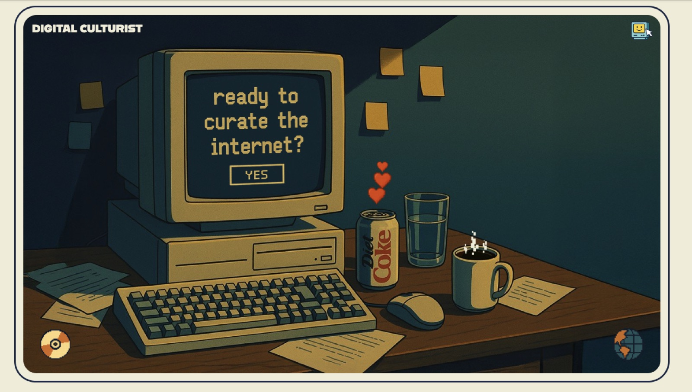
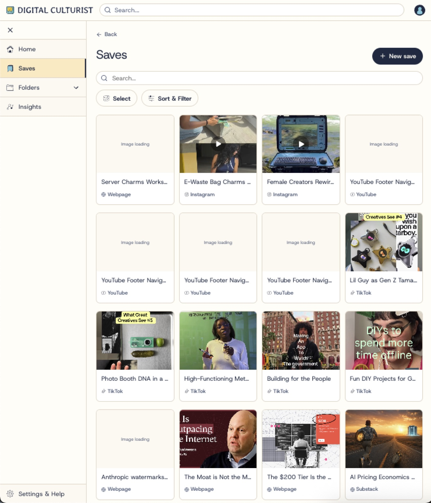
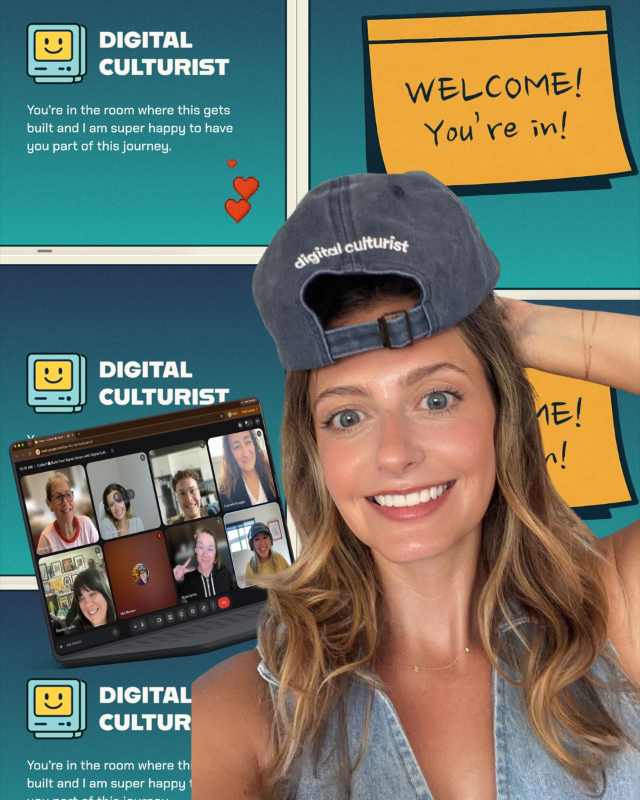
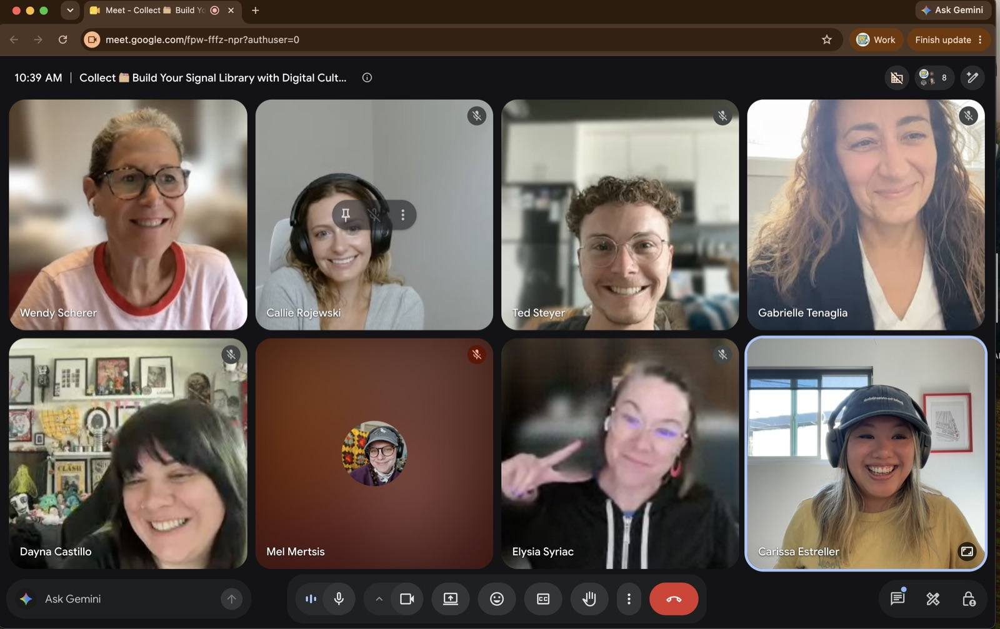
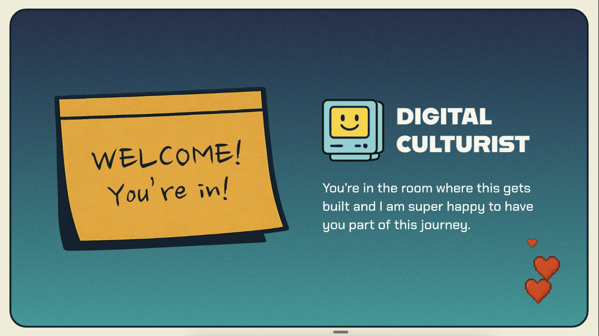
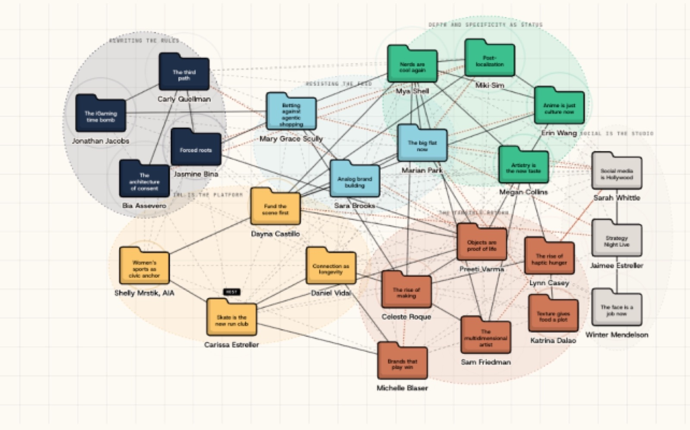
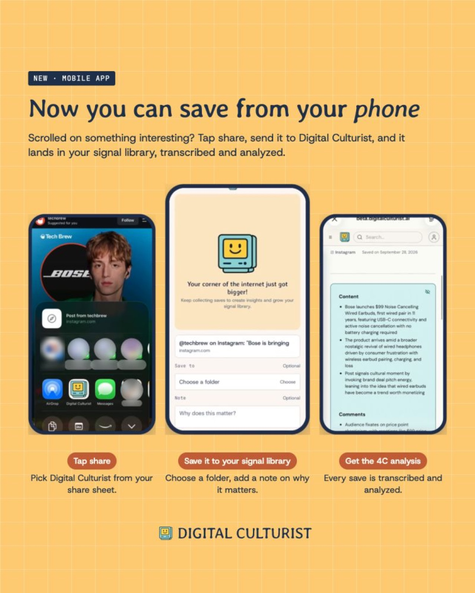
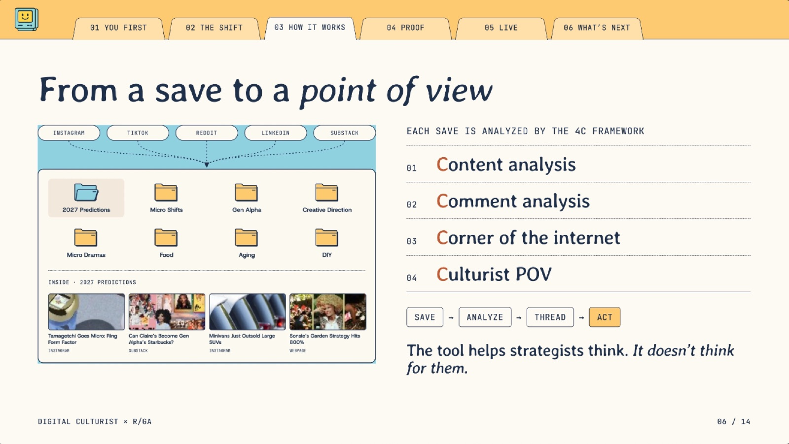
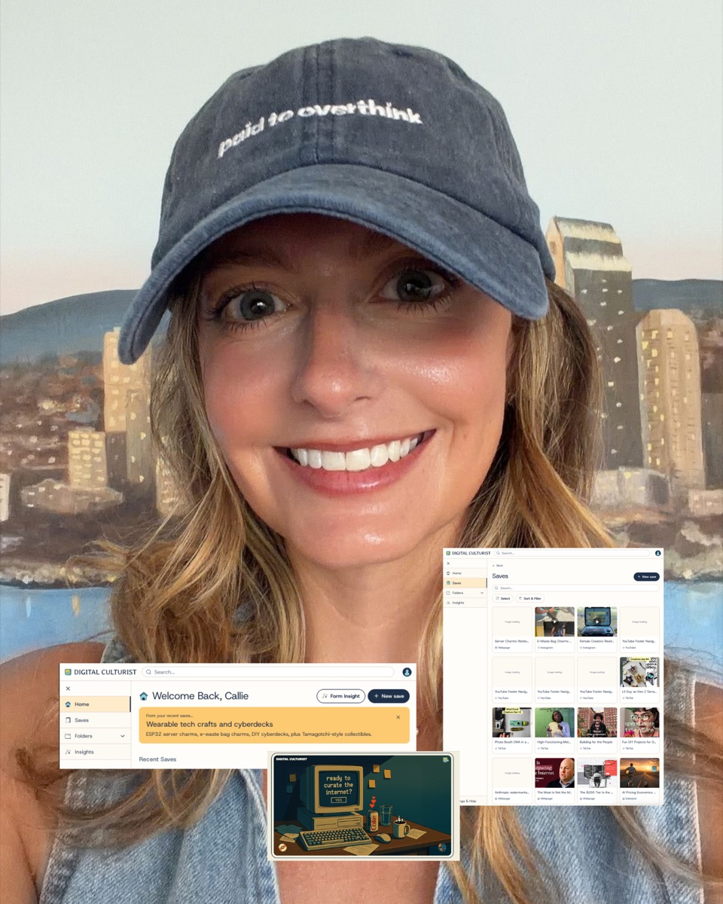
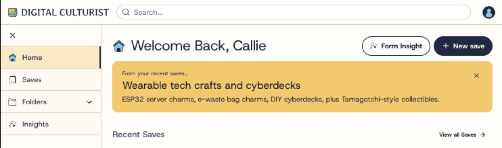

What I did
5 partsSocial & Community
Designed the advocate journey and value-exchange framework. Activated through content, private beta community Slack, reveal events, challenges, merch and co-created report.
Voice
Sharpened the positioning to activate users as “Digital Culturists.”
Creative Campaigns
Ran the beta with my 0→1 playbook: prototype walkthrough, product reveal events, the June 2026 launch event and the “paid to overthink” hat.
Insights
Ran the first 8 in-depth customer interviews; built the bug-reporting workflow and customer data and feedback loop into dashboard and recommendations for product roadmap.
Impact
Set GTM success metrics, power-user thresholds and segmented re-engagement emails. Achieved 55% sign-up rate from email list to beta.
The work
9 images







